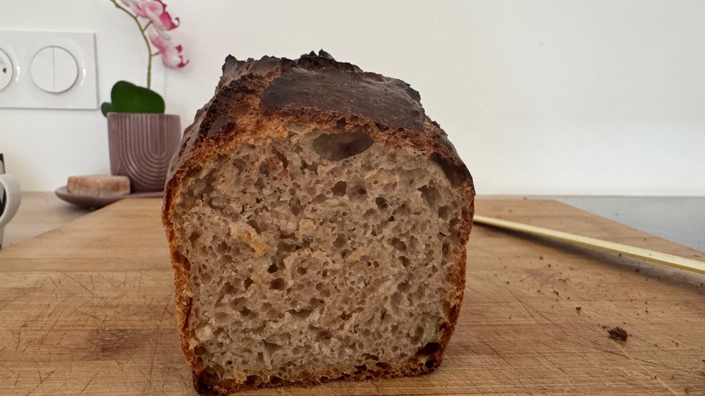

Pain Maria
Ingredients
×
- 300 g d'eau tiède
- 5 g de levure instantanée
- 75 g de farine de seigle T110 ou T150
- 100 g de farine d'épeautre T65
- 200 g de farine T55 ou T65
- 8 g de sel
- 15 g d'huile d'olive
- 50 g de graines torréfiées
- 1 l d'eau bouillante

Préparation
Étape 1
Mélanger 300 g d'eau tiède (37ºC), 5 g de levure instantanée, 75 g de farine de seigle T110 ou T150, 100 g de farine d'épeautre T65, 200 g de farine T55 ou T65, 8 g de sel et 15 g d'huile d'olive.
Étape 2
Ajouter rapidement 50 g de graines torréfiées (optionnel).
Étape 3
Couvrir et mettre dans le four éteint, avec en dessous une lèchefrite remplie d’environ 1 l d'eau bouillante. Laisser lever 1h30.
Étape 4
Au bout d’1h15, préchauffer le four à 250ºC en laissant la lèchefrite.
Étape 5
Verser délicatement la pâte dans un moule chemisé de papier sulfurisé, sans écraser les bulles.
Étape 6
Cuire 25min dans le moule, puis 10min sans moule.
Conseils
- Graines au choix : 1 cas chacune de lin, tournesol, sésame et courge.